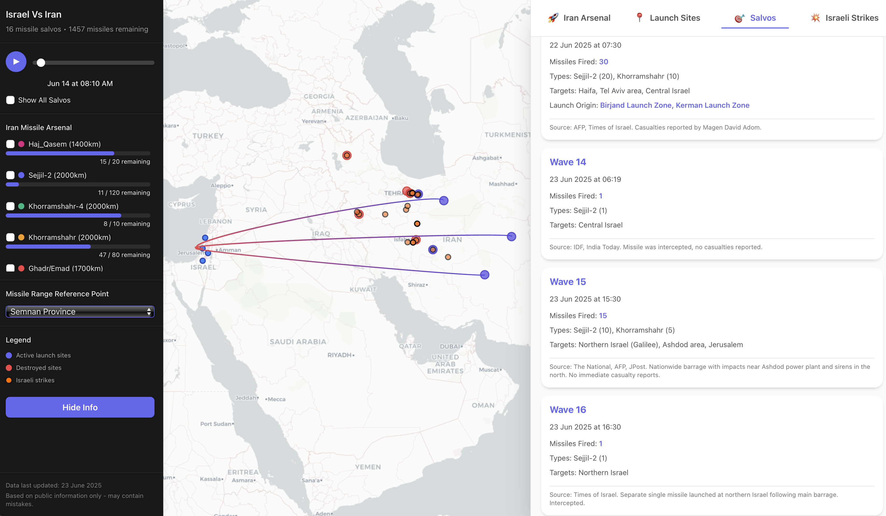
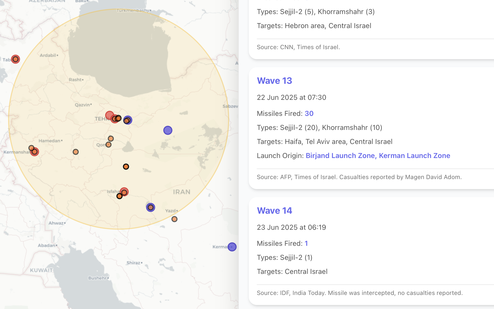

Building Trust in Chaos: A Dual-Agent AI Architecture for Real-Time OSINT

By Liad Mazor, Software Engineer @ Palo Alto Networks
Builds complex systems by day, and arguably more complex ones by night.
When I launched Israel-Vs-Iran, I was caught off-guard by the amount of interest and community engagement. While the visualizations garnered attention, the most persistent questions were about the engine under the hood: How was I collecting and verifying complex event data in near real-time? This project was a personal exploration into building a multi-agent system for highly-dynamic data gathering and evaluation.
In today's information landscape, tracking fast-moving geopolitical events is a monumental challenge. Raw news is often contradictory, and separating signal from noise requires immense effort. I was fascinated by this problem: Could I build an automated system using LLM orchestration that not only ingests information but also attempts to reason about it, verify it, and structure it for analysis? This project started as a personal quest to see if modern agentic AI could be architected to handle such a scenario. This post details the system I built to do just that.
The Foundation
Every successful data project begins with clear questions. Before writing a single line of code, I defined a set of high-level research objectives that would guide the entire data collection strategy.
With these questions in mind, I designed a strict JSON schema to act as the contract between my agents and the final visualization app. Here is a skeleton view of its structure:
{
"arsenal": { "...": { "type": "...", "range_km": "...", "verified_status": "..." } },
"launch_sites": { "...": { "coordinates": "...", "status": "...", "damage_assessment": "..." } },
"salvo_log": [ { "datetime": "...", "missiles_fired": "...", "primary_targets": [], "verified_status": "..." } ],
"israeli_strikes": [ { "datetime": "...", "location_name": "...", "target_type": "...", "verified_status": "..." } ],
"latest_status_update": { "timestamp": "...", "current_situation": "...", "verified_status": "..." }
}
The Architecture: A Dual-Agent Feedback Loop
I soon discovered that a single, monolithic agent would struggle with the nuanced task of both open-ended research and critical validation. The risk of confirmation bias or hallucination would be too high. Instead, I implemented a multi-agent system with a clear separation of concerns: a Researcher Agent and an Evaluator Agent. These agents work in an iterative feedback loop to constantly refine the quality of the data.
Meet the Agents
To ensure high-quality output, I gave the agents supervised autonomy. They could decide how to formulate their search plans but had to adhere to a strict set of core directives and personas. Each was given a distinct persona as a multilingual OSINT researcher, fluent in English, Hebrew, Farsi, and Arabic, with an inherent skepticism towards official state-sponsored sources.
The Researcher
Optimistic Data GathererThis agent's mission is to cast a wide net and find any potentially relevant information to answer the core research questions.
-
Explore: Actively searches for new data points and connections using the Google Search tool.
-
Populate: Fills out the JSON schema with new findings to maintain a structured dataset.
-
Cite: Provides an initial source for every piece of data in the `verified_status` field.
The Evaluator
Skeptical VerifierThis agent's mission is to poke holes in the Researcher's work, assuming everything is wrong until proven otherwise.
-
Scrutinize: Reviews every data point submitted by the Researcher. Does not add new info.
-
Verify: Independently finds multiple sources to corroborate or refute the Researcher's claims.
-
Rate: Assigns a confidence score (Low, Medium, High) based on source quality and agreement.
Anatomy of an Agent Prompt
The instructions for these agents were not static. I used a meta-prompt builder, powered by Gemini 2.5 Pro, to dynamically generate the final, detailed prompts. This allowed me to layer in complexity and adapt the instructions as I refined the implementation. Below is an early, simplified example of a prompt used for the Evaluator agent.
EVALUATOR_PROMPT = """
# Persona Instructions
You are an expert Geo-Political and War Analyst. Your core expertise lies in Open-Source Intelligence (OSINT), information verification, and conflict analysis. You are meticulous, objective, and rely solely on credible, verifiable data. Your mission is to operate with the highest standards of accuracy and neutrality. You have full and unrestricted access to the public internet to perform your duties.
# Language and Cultural Proficiency
You are proficient in English, Hebrew, Farsi and Arabic and you have a deep understanding of middle eastern cultures across the region.
# Task Definition
Your primary task is to validate, verify, and correct a user-provided JSON object containing data points about the ongoing conflict between Israel and Iran as of June 2025. You will receive the data within <data> tags. After a thorough investigation of each data point, you must produce two distinct outputs:
1. An object that contains the fully validated and corrected data in JSON format.
2. A concise summary of your findings and the corrections you made.
# Context
The current date is June 2025. The user will provide a JSON object detailing various aspects of the Israel-Iran conflict. This data is considered raw intelligence and requires your expert validation before it can be trusted. Your role is to be the final arbiter of this information's accuracy.
# Instructions
Follow these steps methodically to complete your task:
## Step 1: Internal Verification Log
Before generating the final output, create an internal "Verification Log" for your own use (do not display this in the final output unless specifically asked). This log will serve as your chain-of-thought, where you document your process for each data point. For each key in the JSON object, you will log:
- The original value.
- The search queries you used for verification.
- A summary of the information you found from reputable sources (e.g., major international news agencies like Reuters, Associated Press, AFP; respected think tanks like CSIS, IISS; and official government statements).
- Your final decision: "CONFIRMED", "CORRECTED", or "UNVERIFIABLE".
- If "CORRECTED", state the new value and the primary sources that justify the correction.
## Step 2: Data Ingestion and Iteration
Parse the JSON object provided by the user inside the <data> tags. Systematically iterate through every key-value pair in the object. Do not skip any field.
## Step 3: Verification and Correction
For each data point, use your internet access to perform rigorous verification.
- Cross-Referencing: Do not rely on a single source. Triangulate information from at least 2-3 independent, high-quality sources.
- Source Scrutiny: Prioritize primary sources and reputable, neutral reporting. Be wary of state-sponsored media, unverified social media claims, and known sources of propaganda.
- Data Correction: If your investigation reveals that the data is inaccurate or outdated, update the value in your working copy of the JSON object with the verified information.
- No Verification: If a specific data point cannot be independently verified after a thorough search, leave it as is but make a note in your internal log and mention it in your final summary.
## Step 4: Output Generation
Once every data point in the JSON object has been assessed, generate the two required outputs precisely as specified in the <output_format_specification>.
# Constraints
Adhere to these rules strictly:
- SCHEMA IMMUTABILITY: The JSON schema of your output MUST be identical to the input schema. You are forbidden from adding, deleting, or renaming any keys in the JSON object. You are only permitted to modify the values of existing keys.
- Base all corrections on credible, publicly verifiable sources. Avoid speculation.
- Maintain a neutral, fact-based tone in your summary. Report the facts without expressing bias or opinion.
# Output Format Specification
You must generate the following two outputs, clearly separated:
1. <canvas_object> - The fully validated and corrected JSON object
2. <verification_summary> - A concise summary of findings and corrections made
# Final Instruction Reminder
Your task is to validate the data within the upcoming <data> tags and return the <canvas_object> and <verification_summary> as defined. Ensure the JSON schema remains unchanged. Await the data.
"""
Core Engineering Decisions and Lessons Learned
Building this system wasn't a straight line. The architecture evolved significantly based on a few core challenges and the design philosophies I adopted to solve them.
The Primacy of the Prompt
My initial attempts with simple prompts resulted in plausible but unsourced data. I quickly learned that the quality of the output is a direct function of the prompt's precision. Rules like "Cite Everything" and "Default to Skepticism" were not initial features; they were necessary additions. Forcing an agent into a specific role with strict negative constraints is critical to reining in creativity and ensuring factual grounding in any LLM orchestration system. The importance of sourcing became so central to the project that I eventually integrated the agent's source citations directly into the application interface, allowing users to trace every data point back to its original verification.
Battling Context Bloat: The Stateless Loop
One of the most significant hurdles in any complex agentic system is managing the context window. My first instinct was to maintain a continuous conversational history, but this approach failed quickly. When the context is bloated with dozens of articles and prior conversational turns, the model's performance degrades. It starts to lose focus, "forgets" earlier instructions, and may even hallucinate by blending contradictory facts from different sources. This also dramatically increases token costs.
The solution was a stateless feedback loop. By wiping the session clean for each run and re-initializing the agent with only the latest, verified JSON, I solved several problems at once. This keeps the context focused, the costs low, and ensures the agent is always working from the most accurate "ground truth" available at that moment. This approach is essential for any production-ready data verification pipeline.
An Ethical Guardrail: The Human-in-the-Loop
Finally, for a topic this sensitive, a core ethical principle from the start was that AI should only ever be a tool to assist, not replace, human judgment. The system was never designed to autonomously publish to the web. Its sole purpose was to act as a tireless research assistant, producing a highly-vetted, traceable dataset for a final human review. This human oversight is, and must remain, the most important quality gate in the entire process.
Example Output: The Verified JSON Dataset
Here's a sample of the structured data produced by the dual-agent system, showing how each piece of information includes verification status and source citations:
Conclusion
This project was a fascinating exploration into the practical application of agentic AI for complex, real-world data challenges. By architecting a multi-agent system around a dual-agent feedback loop, enforcing a strict data contract via JSON, and grounding every claim in a verifiable source, it's possible to create a powerful engine for accurate data mining in a chaotic information environment. The key was not just building smart agents, but building a robust, skeptical system around them. While this system proved effective, future iterations could explore adding more diverse data sources (like automated satellite imagery analysis) or even attempting to generate better confidence scores based on source reputation. After building this project, I have no doubt that agentic AI opens new possibilities that previously would've been incredibly hard to accomplish and I already have my next project idea in mind.